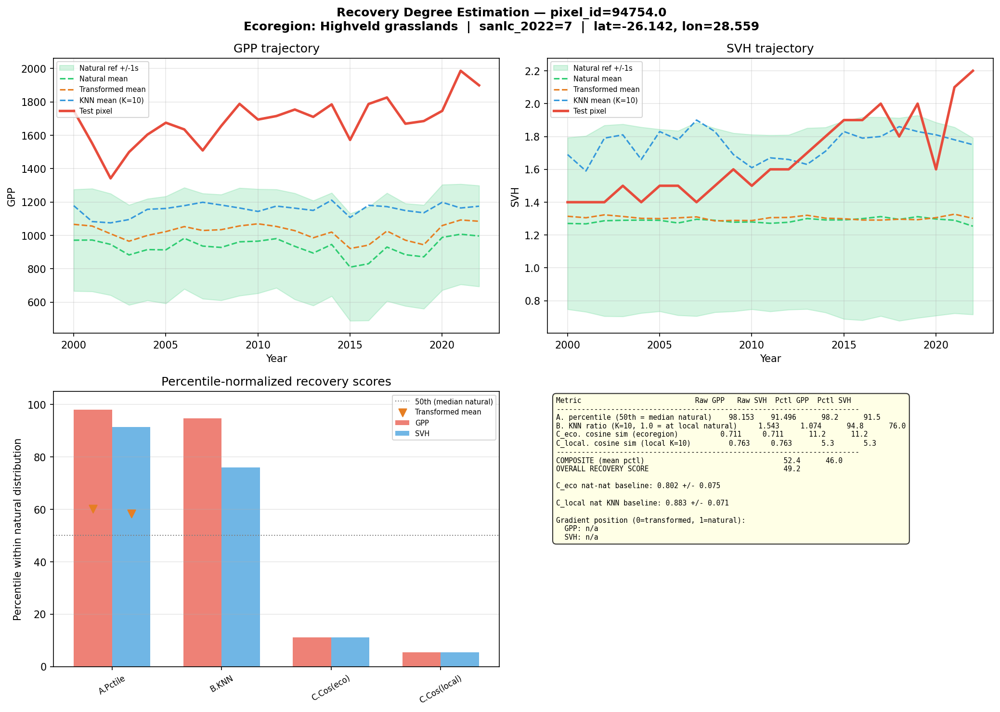
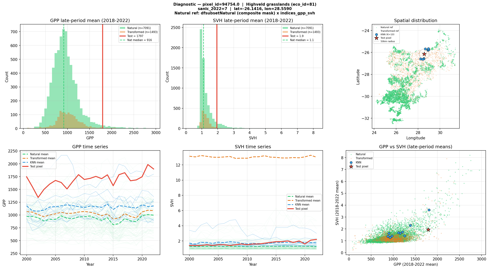
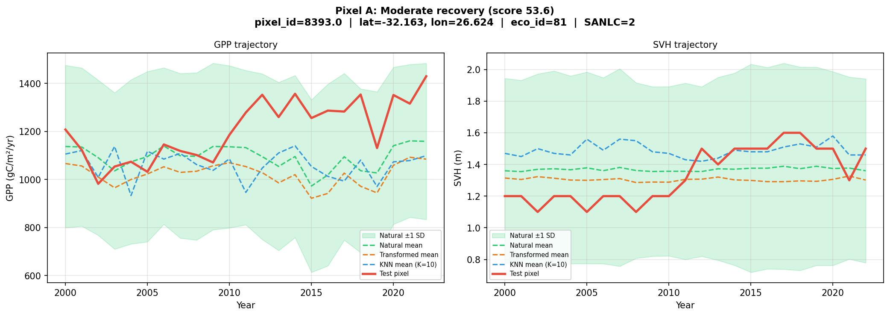
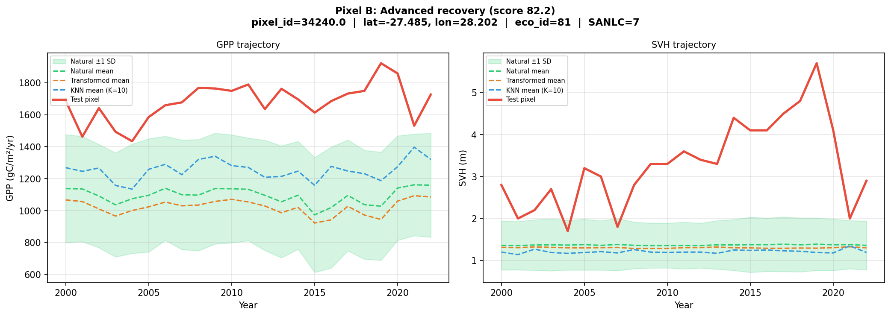
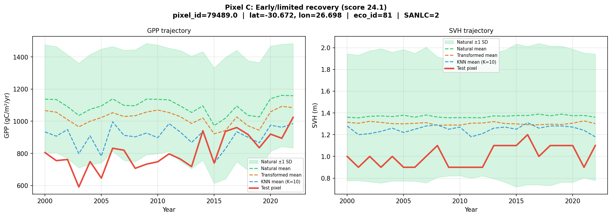

When agricultural land is abandoned, vegetation may begin to recover — but how do we know if recovery is actually happening, and how far along is it? This methodology answers two questions:
We apply this across ~33 million 30 m pixels of abandoned agricultural land in South Africa, using 23 years (2000–2022) of satellite-derived vegetation data.
We track two complementary aspects of vegetation condition over time:
Both are derived from the Global Pasture Watch 30 m products, aggregated annually from 2000 to 2022, giving us a 23-point time series per pixel.
A pixel in the arid Karoo naturally has lower GPP than one in subtropical KwaZulu-Natal. To make trends comparable, we standardise each pixel’s time series relative to its ecoregion (using the RESOLVE 2017 ecoregion boundaries | Paper).
This is done through Z-score normalisation: for each ecoregion, we calculate the average GPP (or SVH) and the spread (standard deviation) across all pixels. Each pixel’s value is then re-expressed as “how many standard deviations above or below the ecoregion average?” For example, a Z-score of +1.5 means the pixel’s GPP is 1.5 standard deviations above its ecoregion average. This ensures we’re asking “is this pixel trending differently from its ecological neighbours?” rather than confusing trend with baseline productivity differences between biomes.
For each pixel, we apply two well-established methods that make no assumptions about the shape of the data distribution (called “non-parametric” methods — they work regardless of whether the data follow a bell curve or any other particular pattern):
Theil-Sen slope estimates the rate of change over time. Imagine drawing a line between every possible pair of years in the 23-year time series — that’s 253 pairs. Each line has a slope (rate of change). The Theil-Sen estimator takes the median (middle value) of all 253 slopes as the overall trend. Because it uses the median rather than the mean, it is resistant to outliers — a single extreme drought year or an unusual rainfall year will not distort the estimated trend.
Mann-Kendall test determines whether a trend is statistically significant (i.e., unlikely to be due to chance). It works by comparing every pair of years and asking a simple question: did the value go up or down? If the later year has a higher value, that pair is scored +1; if lower, -1; if the same, 0. All the scores are summed. In a truly trendless series, roughly half the pairs would go up and half would go down, so the sum would be near zero. A large positive sum means most pairs show increases — an upward trend. The test then calculates the probability (p-value) that such a strong pattern could arise purely by chance. If the p-value is below 0.05 (i.e., less than a 5% chance of occurring randomly), we conclude the trend is real.
A pixel is classified as:
| Class | Rule |
|---|---|
| Recovering | Statistically significant increasing trend (p < 0.05) |
| Degrading | Statistically significant decreasing trend (p < 0.05) |
| Stable | No significant trend detected |
We classify GPP and SVH independently, then cross-tabulate. A pixel might show functional recovery (increasing GPP) but structural stability (no change in SVH), or vice versa.
Across ~28 million natural and secondary-natural abandoned-ag pixels:
Recovery and degradation rates vary substantially across ecoregions, reflecting differences in climate, soil, land-use history, and time since abandonment.
Knowing that a pixel is recovering is useful, but we also want to know how far along recovery is. A pixel with a significant positive GPP trend might still be far below natural conditions, or it might have nearly converged.
Before measuring recovery, we need a clear definition of what counts as a natural reference site. We use a composite mask that combines four independent global datasets, requiring a pixel to satisfy all of the following:
This composite mask was applied to a stratified sample of ~331,000 points across South Africa, identifying ~97,000 points that meet all criteria as the natural reference subset. This is an independent dataset — not drawn from the abandoned-ag pixels being assessed.
For any given ecoregion, the analysis uses only natural reference pixels from that same ecoregion. For the Highveld Grasslands, this means 59,195 natural reference pixels.
The natural reference pixels carry two types of information:
Transformed reference pixels (cropland, built-up, plantations, mines) from the same ecoregion provide a contrasting baseline for interpreting results.
We use three metrics (A, B, C), each capturing a different dimension of recovery. To make them comparable, each is expressed as a percentile within the natural distribution.
What does percentile normalisation mean? Imagine lining up all the natural reference pixels from worst to best on a given metric. The test pixel (recovering pixel) is then placed in this line. Its percentile is the fraction of natural pixels it outperforms. For example, if a test pixel scores higher than 75 out of 100 natural pixels, its percentile is 75. This approach transforms all metrics onto a common 0–100 scale:
The simplest and most intuitive measure. We compute the test pixel’s mean GPP (or SVH) over the most recent five years (2018–2022), then ask: where does this value fall within the distribution of natural reference pixels in the same ecoregion?
Ecoregions are large and internally variable — a valley floor will have different natural productivity than a hilltop, even within the same ecoregion. To account for this local variation, Metric B finds the 10 closest natural pixels within 50 km of the test pixel (using geographic distance) and computes the ratio of the test pixel’s recent productivity to the mean of these neighbours.
This ratio is then percentile-normalised by comparing it to the ratios observed across all natural pixels relative to the ecoregion mean.
GPP and SVH tell us about productivity and structure, but ecosystems differ in ways these two variables cannot fully describe — species composition, canopy texture and layering, seasonal growth patterns, soil exposure, moisture regimes. To capture this broader ecological signal, we use embeddings from the AlphaEarth Foundations model (Google DeepMind | Blog).
What is an embedding? Think of it as a fingerprint for a piece of land. The AlphaEarth model ingests a full year of satellite observations from multiple sources:
| Data source | What it captures |
|---|---|
| Sentinel-2 multispectral imagery | Vegetation type, health, phenology, soil |
| Landsat 8 and 9 | Additional spectral bands, thermal, longer archive |
| Sentinel-1 C-band SAR radar | Vegetation structure, moisture (sees through clouds) |
| ALOS PALSAR-2 L-band radar | Woody biomass, forest structure |
| GEDI lidar-derived canopy height | Vertical vegetation structure |
| Copernicus GLO-30 elevation model | Terrain, slope, aspect |
| ERA5-Land climate data | Temperature, precipitation, seasonality |
| GRACE gravity data | Groundwater and hydrological changes |
The model distils all this information into a single vector of 64 numbers per pixel at 10 m resolution. Two pixels with similar vectors have similar overall landscape characteristics across all these data streams. This is analogous to how DNA barcoding can identify species similarity — the embedding captures the overall “identity” of a landscape.
How do we compare embeddings? We use cosine similarity — a measure of how similar two vectors are in direction. It ranges from 0 (completely different) to 1 (identical). For landscape embeddings, values typically fall between 0.75 and 0.95, where higher values mean more similar landscapes.
We compute this at two spatial scales:
Ecoregion scope (C_eco): How similar is the test pixel’s embedding to all natural reference pixels across the ecoregion? This is normalised by computing how similar natural pixels are to each other — if the test pixel is as similar to natural as natural pixels are to one another, it suggests convergence to a natural state.
Local scope (C_local): How similar is the test pixel to the same 10 nearest natural neighbours used in Metric B? Normalised against a baseline of how similar natural pixels typically are to their own local neighbours.
What does Metric C add beyond GPP and SVH? A recovering pixel might have regained its productivity (high Metric A) but still look fundamentally different in its vegetation structure, species composition, or seasonal patterns — all things that affect biodiversity, ecosystem function, and long-term resilience. Lower C scores relative to A and B scores suggest productivity has returned but the ecosystem has not yet fully converged to a natural-like composition or structure.
Each metric produces a percentile score (0–100). We average these into a single composite:
Recovery Score = mean of all metric percentiles
computed separately for GPP and SVH, then averaged into an overall score. A score of 50 means the pixel is indistinguishable from the median natural condition across all metrics.
The figures below show a recovery degree assessment for a single pixel in the Highveld Grasslands (pixel_id 98483, -25.90°S, 28.97°E — Google Maps | Google Earth | Esri Wayback). For context, natural reference pixels in this ecoregion have a median GPP of 914 gC/m2/yr and a median SVH of 1.10 m.

Top left — GPP trajectory (2000–2022): The red line shows the test pixel’s GPP over time. The green dashed line and shaded band show the natural reference mean +/- 1 standard deviation. The orange dashed line is the transformed (non-natural) mean, and the blue dashed line is the mean of the 10 nearest natural neighbours. This pixel’s GPP has been consistently above the natural mean since around 2005, indicating strong productivity recovery.
Top right — SVH trajectory: Same layout for vegetation height. The test pixel shows a more variable trajectory with generally above-natural-average vegetation height.
Bottom left — Percentile bar chart: Each metric’s percentile score, split into GPP (red) and SVH (blue). The grey dashed line marks the 50th percentile (natural median). Metrics A and B are well above 50 (strong productivity and structural recovery), while Metric C (embedding similarity) is below 50 (the landscape fingerprint has not yet converged to natural). The orange triangles show where transformed (non-natural) pixels fall for Metric A — well below the test pixel.
Bottom right — Summary table: Raw values, percentile scores, and the composite recovery score. The table also shows the gradient position (0 = transformed, 1 = natural median).

Top left — GPP histogram: The distribution of late-period (2018–2022) mean GPP for natural (green) and transformed (orange) pixels, with the test pixel marked in red. The green dashed line marks the natural median. This test pixel clearly falls in the upper tail of the natural distribution.
Top right — SVH histogram: Same layout for vegetation height.
Top far right — Spatial map: The locations of all natural reference pixels (green dots), transformed reference pixels (orange), the 10 nearest natural neighbours (blue circles), and the test pixel (red star). The dashed circle shows the 50 km search radius used for KNN selection.
Bottom left & centre — Time series spaghetti plots: Individual natural pixel time series (faint green lines) overlaid with the natural mean (green dashed), transformed mean (orange), KNN mean (blue), and test pixel (red). These plots show whether the test pixel’s trajectory is converging toward the natural range or remains distinct.
Bottom right — GPP vs SVH scatter: Bivariate view of where the test pixel sits relative to natural and transformed pixels in functional-structural space. Natural pixels cluster in one region; the test pixel may overlap or sit outside this cloud, indicating whether recovery is balanced across both dimensions.
To illustrate how the metrics separate different stages of recovery, here are three real pixels from the Highveld Grasslands batch run (317,811 recovering pixels scored). For context, natural reference medians are: GPP = 914 gC/m2/yr, SVH = 1.10 m.
Location: -32.16°S, 26.62°E | Secondary natural (SANLC class 2) | Google Maps | Google Earth | Esri Wayback Trend: GPP slope = +16.4 gC/m2/yr, SVH slope = +0.020 m/yr (both significant)

The red line (test pixel) sits consistently above the natural mean (green dashed) and transformed mean (orange dashed) for GPP, confirming strong productivity recovery. SVH is more modest but still above the natural average. The KNN mean (blue) tracks close to the natural mean, indicating the pixel’s local natural neighbourhood is representative of the broader ecoregion.
| Metric | Raw value | Percentile | What it means |
|---|---|---|---|
| A. GPP percentile | 1,317 gC/m2/yr | 91.0 | GPP exceeds 91% of natural pixels — well above the natural median of 914 |
| A. SVH percentile | 1.48 m | 79.7 | Vegetation height of 1.48 m exceeds nearly 80% of natural pixels (median = 1.10 m) |
| B. GPP KNN ratio | 1.26 | 84.9 | GPP is 26% above its 10 nearest natural neighbours; this ratio is at the 85th percentile of natural |
| B. SVH KNN ratio | 1.14 | 79.3 | Structure is 14% above local natural neighbours |
| C. Embedding (ecoregion) | 0.808 | 30.8 | Landscape fingerprint is less similar to natural than 69% of natural-to-natural comparisons |
| C. Embedding (local) | 0.831 | 16.3 | Locally, the landscape fingerprint is less similar to natural than most natural neighbours are to each other |
| Composite GPP | 55.8 | ||
| Composite SVH | 51.5 | ||
| Overall recovery score | 53.6 | Just above the natural median |
Interpretation: This pixel is highly productive — its GPP of 1,317 gC/m2/yr is 44% above the natural median of 914, which can happen when a former field recovers vigorously under favourable conditions. However, the embedding scores are well below 50, telling us that despite its productivity, this patch still looks quite different from intact natural grassland in other landscape properties. It is likely dominated by fast-growing pioneer grasses rather than the diverse, multi-layered plant community typical of mature Highveld grassland.
Location: -27.49°S, 28.20°E | Google Maps | Google Earth | Esri Wayback

The test pixel’s GPP (red) is far above both the natural mean and its local KNN mean — nearly double the ecoregion average. The SVH trajectory is dramatic: the test pixel reaches 2.8–3.9 m, far above the natural grassland average of ~1.2 m, consistent with woody encroachment or afforestation on former cropland (SANLC class 7 = plantation). This is reflected in the near-perfect SVH percentile scores.
| Metric | Raw value | Percentile | What it means |
|---|---|---|---|
| A. GPP percentile | 1,757 gC/m2/yr | 98.0 | Among the most productive pixels in the ecoregion — nearly double the natural median |
| A. SVH percentile | 3.90 m | 99.2 | Exceptional vegetation height — in the top 1% of natural pixels |
| B. GPP KNN ratio | 1.37 | 90.5 | 37% more productive than local natural neighbours |
| B. SVH KNN ratio | 3.65 | 99.5 | Height far exceeds local natural benchmarks (3.6x neighbours) |
| C. Embedding (ecoregion) | 0.743 | 83.8 | Landscape fingerprint is more similar to natural than 84% of natural-to-natural comparisons |
| C. Embedding (local) | 0.801 | 51.3 | Local similarity is right at the natural median |
| Overall recovery score | 82.2 |
Interpretation: This pixel shows exceptional recovery across all dimensions. The very high SVH (3.9 m, likely a woody encroachment or forest patch) and the high C_eco score (84th percentile) indicate that this pixel has not only recovered productively but its multi-source satellite signature closely resembles intact natural vegetation. This is the profile of a site well advanced toward full ecosystem recovery, potentially reflecting longer time since abandonment or proximity to natural seed sources.
Location: -30.67°S, 26.70°E | Google Maps | Google Earth | Esri Wayback

The test pixel’s GPP (red) hovers near the natural mean (green dashed) throughout the time series — consistent with its Metric A percentile of ~51. SVH sits at or just below the natural average, and both show only modest upward trends. Compared to Pixels A and B, there is no clear visual separation between the test pixel and the natural reference envelope, suggesting this pixel has recovered to roughly natural productivity levels but without overshooting.
| Metric | Raw value | Percentile | What it means |
|---|---|---|---|
| A. GPP percentile | 918 gC/m2/yr | 50.8 | GPP is just at the natural median (914) — productivity has recovered to a typical natural level |
| A. SVH percentile | 1.06 m | 41.9 | Vegetation height is slightly below the natural median of 1.10 m |
| B. GPP KNN ratio | 1.00 | 55.8 | Productivity matches local natural neighbours almost exactly |
| B. SVH KNN ratio | 0.69 | 1.9 | Structure is at only 69% of local natural benchmarks — in the bottom 2% of natural variation |
| C. Embedding (ecoregion) | 0.830 | 20.2 | Landscape fingerprint is much less similar to natural than most natural-to-natural comparisons |
| C. Embedding (local) | 0.752 | 1.0 | Local landscape similarity is at the very bottom of the natural distribution |
| Overall recovery score | 24.1 |
Interpretation: An interesting case where productivity has recovered to near-natural levels (GPP of 918, right at the median) but structural and compositional recovery has not followed. The very low SVH KNN ratio (69% of neighbours, 2nd percentile) and extremely low embedding scores suggest that this vegetation is structurally simple and looks fundamentally different from natural grassland. Possible explanations include low-growing secondary vegetation, altered phenological patterns, or persistent legacy effects of prior land use. This is the kind of site where productivity alone would misleadingly suggest recovery, but the full multi-metric assessment reveals how much further it has to go.
| Pixel A | Pixel B | Pixel C | |
|---|---|---|---|
| Recovery score | 53.6 | 82.2 | 24.1 |
| Productivity recovery | Strong (overshooting) | Exceptional | Moderate (at natural median) |
| Structural recovery | Strong | Exceptional | Weak (far below neighbours) |
| Compositional/landscape convergence | Lagging | Strong | Very lagging |
| Likely stage | Active recovery | Near-full recovery | Early/stalled recovery |
The recovery degree analysis was run for all recovering pixels in the Highveld Grasslands ecoregion, which is the dominant grassland ecoregion in the South African interior.
| Item | Count |
|---|---|
| Recovering pixels identified | 317,811 |
| Total pixel-records scored | 826,973 |
| Natural reference pixels used | 59,195 |
| Metric | Mean | Median | Std Dev | Interpretation |
|---|---|---|---|---|
| A (GPP percentile) | 90.9 | 94.7 | 11.6 | Recovering pixels have higher productivity than ~91% of natural pixels |
| A (SVH percentile) | 86.3 | 88.7 | 12.0 | Vegetation height exceeds ~86% of natural pixels |
| B (KNN GPP ratio) | 72.5 | 77.0 | 19.3 | Compared to local neighbours, productivity exceeds ~73% of natural benchmarks |
| B (KNN SVH ratio) | 74.8 | 80.1 | 23.4 | Compared to local neighbours, structure exceeds ~75% of natural benchmarks |
| C eco (embedding sim.) | 28.5 | 25.0 | 18.5 | Landscape similarity to ecoregion natural is lower than most natural-to-natural comparisons |
| C local (embedding sim.) | 17.6 | 15.0 | 16.7 | Local landscape similarity is well below natural-to-natural levels |
| Composite score | 52.1 | 51.9 | 9.5 | Overall, pixels are near the natural median |
Score range: 0.1 to 91.2 (out of 100).
The results reveal a clear pattern: productivity has recovered, but the broader landscape signal has not yet converged to natural.
Metrics A and B (both well above 50) tell us that these recovering pixels have regained or even exceeded the productivity and vegetation height of natural grasslands.
Metric C (well below 50) tells a different story: despite productive vegetation, the multi-source satellite fingerprint of these pixels still looks different from intact natural grassland. This could reflect differences in species composition (e.g., dominance of pioneer grasses rather than climax species), vegetation structure (uniform canopy rather than the heterogeneous structure of mature grassland), seasonal phenology (different green-up/senescence timing), or residual soil and land-use signatures.
The composite score of ~52 balances these two signals. On average, recovering Highveld pixels are near the natural median when all dimensions are considered, but this masks the divergence between productivity recovery (strong) and compositional/structural recovery (lagging).
This pattern — functional recovery outpacing compositional recovery — is well documented in restoration ecology and suggests that while these grasslands have regained their capacity to fix carbon and accumulate biomass, they may still differ from intact natural areas in ecologically important ways that satellite-based productivity measures alone would miss.
| Component | Source | Resolution |
|---|---|---|
| GPP (annual sum) | Global Pasture Watch (Paper) | 30 m |
| SVH (annual mosaic) | Global Pasture Watch (Paper) | 30 m |
| Land cover | South African National Land Cover 2022, reclassified to 7 classes | 30 m |
| Ecoregions | RESOLVE Ecoregions 2017 (Paper) | Vector |
| AlphaEarth embeddings | Google/DeepMind Satellite Embedding V1, 2022 annual mosaic | 10 m |
| SBTN Natural Lands | WRI SBTN Natural Lands Map 2020 | 30 m |
| Natural Forests typology | Nature-Trace (Paper) | 10 m |
| Global Human Modification | GHM (Kennedy et al. | Paper) |
| Biodiversity Intactness Index | BII Africa | 1 km |
All processing is performed in Python using Google Earth Engine for data extraction, DuckDB for efficient columnar queries on large parquet files, scikit-learn for spatial indexing and similarity computation, and SciPy for statistical testing.